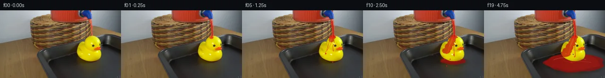

![首帧]()

Round 00
2026-11-05T01:11:49.611693+00:00像素候选变化代码 +305/−0inspection 更新
pixels 5ea885eda1797dbf · code d9246a09acdad872
查看本轮 generate.py 真实 diff
--- previous/generate.py
+++ current/generate.py
@@ -0,0 +1,305 @@
+from pathlib import Path
+import math
+
+import numpy as np
+from PIL import Image, ImageDraw, ImageFilter
+
+from artifact_io import save
+
+
+ROOT = Path(__file__).resolve().parent
+W, H = 256, 144
+SS = 4
+RESAMPLE = Image.Resampling.LANCZOS
+
+
+def smoothstep(x):
+ x = max(0.0, min(1.0, x))
+ return x * x * (3.0 - 2.0 * x)
+
+
+def mask_from(draw_fn, blur=0.0):
+ """Draw an antialiased grayscale mask at 4x resolution."""
+ m = Image.new("L", (W * SS, H * SS), 0)
+ d = ImageDraw.Draw(m)
+ draw_fn(d)
+ if blur:
+ m = m.filter(ImageFilter.GaussianBlur(blur * SS))
+ return np.asarray(m.resize((W, H), RESAMPLE), dtype=np.float32) / 255.0
+
+
+def pts_scaled(points):
+ return [(int(round(x * SS)), int(round(y * SS))) for x, y in points]
+
+
+def ellipse_scaled(draw, box, fill=255, outline=None, width=1):
+ box = tuple(int(round(v * SS)) for v in box)
+ draw.ellipse(box, fill=fill, outline=outline, width=max(1, int(width * SS)))
+
+
+def composite(frame, mask, color, opacity=1.0):
+ a = np.clip(mask * opacity, 0.0, 1.0)[..., None]
+ c = np.asarray(color, dtype=np.float32)[None, None, :]
+ return np.clip(frame.astype(np.float32) * (1.0 - a) + c * a, 0, 255).astype(np.uint8)
+
+
+def cubic_points(p0, p1, p2, p3, count=36):
+ out = []
+ for u in np.linspace(0.0, 1.0, count):
+ v = 1.0 - u
+ x = v**3 * p0[0] + 3 * v * v * u * p1[0] + 3 * v * u * u * p2[0] + u**3 * p3[0]
+ y = v**3 * p0[1] + 3 * v * v * u * p1[1] + 3 * v * u * u * p2[1] + u**3 * p3[1]
+ out.append((x, y))
+ return out
+
+
+def irregular_ellipse(cx, cy, rx, ry, phase, n=64):
+ out = []
+ for i in range(n):
+ q = 2.0 * math.pi * i / n
+ wobble = 1.0 + 0.045 * math.sin(5 * q + phase) + 0.025 * math.sin(9 * q - 0.7 * phase)
+ # A slight perspective shear follows the tray's receding diagonal.
+ x = cx + rx * math.cos(q) * wobble + 0.11 * ry * math.sin(q)
+ y = cy + ry * math.sin(q) * wobble
+ out.append((x, y))
+ return out
+
+
+def liquid_frame(base, duck_mask, t):
+ if t == 0:
+ return base.copy()
+
+ f = base.copy()
+ tau = t / 19.0
+
+ # Soft contact shadow where the growing pool darkens the metal tray.
+ if t >= 5:
+ age = smoothstep((t - 4) / 15.0)
+ rx = 7.0 + 56.0 * age
+ ry = 2.0 + 18.0 * age
+ cx, cy = 190.0 + 1.5 * age, 104.5 + 7.0 * age
+ shadow = mask_from(
+ lambda d: d.polygon(pts_scaled(irregular_ellipse(cx + 1.5, cy + 2.0, rx + 3, ry + 2, 0.8 * t)), fill=255),
+ blur=2.2,
+ )
+ shadow *= (1.0 - np.clip(duck_mask * 1.25, 0, 1))
+ f = composite(f, shadow, (35, 13, 12), 0.28)
+
… diff truncated; 218 more lines …